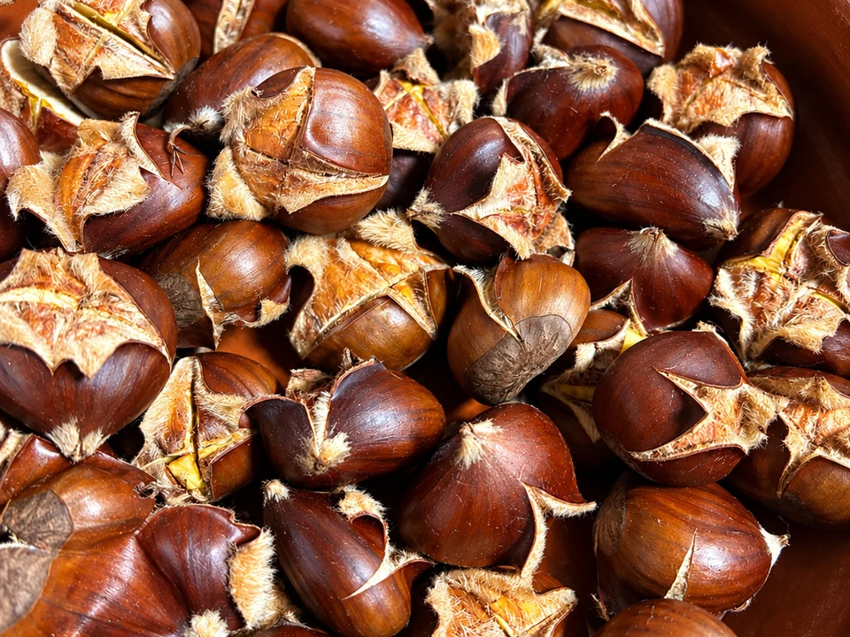

Castañas asadas en airfryer
Castañas tiernas por dentro y tostadas por fuera, preparadas en freidora de aire. Con corte en cruz, remojo opcional y un breve reposo antes de pelarlas.
- Preparación
- 10 min
- Asado
- 15–18 min
- Reposo
- 5 min
- Raciones
- 4

Ingredientes
4 raciones
Marca lo que ya tienes.
Utensilios: freidora de aire, cuchillo y paño de cocina limpio. La sal y el remojo son opcionales.
Cómo asar castañas en airfryer
- Lavar y secar. Lava bien las castañas y sécalas.
- Hacer el corte. Con un cuchillo y sobre una superficie estable, haz un corte en cruz en la parte abombada de cada castaña. Atraviesa la cáscara y la piel interior para evitar que revienten al asarlas.
- Remojar (opcional). Deja las castañas 10 minutos en agua templada. Después escúrrelas y sécalas. Este paso es opcional y añade 10 minutos a la preparación.
- Precalentar la freidora. Precalienta la airfryer a 200 °C durante 3 minutos.
- Asar las castañas. Pon las castañas en una sola capa y ásalas a 200 °C durante 15–18 minutos. Mueve la cesta a mitad de cocción y ajusta el tiempo al tamaño de las castañas y al modelo de freidora.
- Reposar y pelar. Envuelve las castañas en un paño limpio durante 5 minutos. Pélalas aún calientes, en cuanto puedas manipularlas sin quemarte, y sírvelas. La pizca de sal es opcional.
UN POCO DE OFICIO
Para que te salgan bien
Consejos
- No ases las castañas sin practicar antes el corte en cruz.
- Colócalas en una sola capa y mueve la cesta a mitad del asado. Haz tandas si no caben sin amontonarse.
Una alternativa con dos temperaturas
En lugar del asado directo, cocina 10 minutos a 180 °C y después 5–7 minutos a 200 °C. Son dos opciones distintas: no sumes ambos métodos.
Cómo servir y pelar
Deja reposar las castañas 5 minutos en un paño limpio. Pélalas aún calientes, sin quemarte, y llévalas a la mesa en un cuenco. La sal es opcional.
MÁS SOBRE ESTA RECETA
↑ Volver a la recetaCastañas en freidora de aire: del corte al pelado
Un cuenco de castañas calientes es una forma sencilla de llevar el otoño a la mesa. Esta receta utiliza 400 g para cuatro raciones y no necesita añadir aceite: las castañas se lavan, se cortan y se colocan en la cesta. El remojo queda a tu elección; lo que no conviene saltarse es el corte de la cáscara ni el reposo final antes de pelarlas.
Cuánto tiempo necesitan las castañas en airfryer
La referencia de esta preparación son 15–18 minutos a 200 °C, después de precalentar durante 3 minutos. Ese intervalo corresponde al asado, no al tiempo que necesitas desde que empiezas a lavarlas hasta que las sirves. Aparte están los 10 minutos de preparación, los 5 de reposo y, cuando se hace, el remojo de otros 10 minutos. El tamaño de las castañas y la freidora pueden hacer que necesites ajustar la cocción.
El corte y el remojo no son lo mismo
El corte en cruz debe atravesar la cáscara y la piel interior, no quedarse en una marca superficial. Se hace en la zona abombada de cada castaña antes de introducirlas en la freidora. El remojo, en cambio, es opcional: la receta propone 10 minutos en agua templada, seguidos de un buen escurrido y secado. No sustituye al corte y no es necesario alargarlo para seguir esta preparación.
Una sola capa y un reposo con paño
Reparte las castañas sin amontonarlas y mueve la cesta a mitad del asado. Si los 400 g no caben en una sola capa, trabaja por tandas en lugar de llenar la cesta hasta arriba; en ese caso, necesitarás más tiempo para terminar toda la cantidad. Al sacarlas, envuélvelas 5 minutos en un paño limpio y pélalas cuando aún estén calientes, pero se puedan tocar sin quemarse.
Otra forma de repartir el calor
La alternativa incluida en la receta empieza con 10 minutos a 180 °C y termina con 5–7 minutos a 200 °C. Es una opción distinta al asado directo a 200 °C, no un tiempo extra que haya que sumar después. Elige uno de los dos métodos y conserva el corte previo y el reposo con paño en ambos casos.
Para preparar una mesa de picoteo, consulta también nuestra selección de aperitivos fáciles.